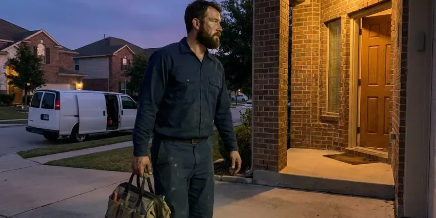

Trenchless Sewer Line Repair in Aiken, SC
Roots in the joints, a cracked clay lateral, a cast iron belly. We camera the line in Aiken, SC and line it or burst in new pipe.
- HDPE Pipe Replacement
- Locator Marks the Exact Break
- Licensed, Insured Crews
- Jointless Liners Roots Can't Enter

Sewer Line Broken in Aiken, SC?
We show you the video and price the repair before any work begins.
Trenchless Sewer Line Repair in Aiken, SC
KBN Plumbing fixes broken sewer laterals in Aiken, SC through a cleanout or one small pit. The old pipe stays in the ground and becomes the host for a new liner, or it gets split apart as fresh HDPE pipe is pulled through behind a bursting head. Far less digging. Most residential jobs wrap up in a day.
Work we handle every week:
- Static and Pneumatic Pipe Bursting
- Camera inspection with depth and footage tracking
- Recorded Video Pipe Inspection

Additional Plumbing Repair Services in Aiken, SC
We offer expert plumbing repair services across Aiken, SC to fix leaks, restore flow, and keep your system running smoothly.


Customers
Why Choose KBN Plumbing for Trenchless Sewer Line Repair in Aiken, SC?
Mature trees and paved walks are the usual reason Aiken homeowners ask about trenchless. An open trench would cut straight through the root zone and the concrete. We line under them instead, then run the camera back through the new pipe so you can see the finished interior on video.
- Small Pits, Most jobs need one or two pits about three feet square, or just the cleanout.
- Lower Restoration Cost, Skipping the trench means no new driveway slab and no resodding the front lawn.
- Clear Pricing, You get a written price for lining, bursting or a dig before we start.
Citywide Coverage
Houses and small commercial buildings anywhere in Aiken are fair game for trenchless repair. Our gear fits most sites. A 4-inch house lateral is the most common job, but we also line 6-inch lines behind small shops and offices.
Experienced Team
Licensed plumbers lead every trenchless crew, and they keep up with new liner products as manufacturers update resins and equipment each year. Each tech on the truck has passed a background check. They wear boot covers inside.
Safety-First Approach
Work in the public right of way, like a tap at the street main, usually needs its own permit from the city or sewer district. We file that one too. Liner resins are rated for sewer use and will not break down from household drain cleaners.
Trusted Certified Aiken Plumbing Services Professionals
At KBN Plumbing, we take pride in licensed, certified plumbing services throughout Aiken, SC. Credentials matter in this trade. Every repair, install and maintenance visit follows strict safety and quality rules, and the plumbers doing the work carry recognized industry credentials.
Call Us Now PHCC Plumbing Contractor Recognition
PHCC Plumbing Contractor Recognition Better Business Bureau (BBB) Accreditation
Better Business Bureau (BBB) Accreditation Angi Certified Pro
Angi Certified Pro ISO 9001 Quality Management Certification
ISO 9001 Quality Management CertificationTrenchless Sewer Line Repair Services in Aiken, SC
Causes of Sewer Line Failure in Aiken, SC
Shifting soil is one of the main reasons sewer joints pull apart or crack. Clay that swells when wet and shrinks in dry spells can shift buried sewer lines over time, leading to sags, separated joints and root intrusion. Roots are the other big one, since a hairline gap at a clay joint is enough for a feeder root to get in and then swell into a mat that catches paper. Age does the rest. Cast iron scales and thins, and clay bells crack under load.

Pipe Bursting Sewer Repair in Aiken
Bursting can upsize the line. A 4-inch clay lateral can be replaced with 6-inch HDPE, which helps on lines that clog because they were undersized from the start or have been added onto with extra bathrooms. Each end only needs a pit around three by four feet. No trench in between.
Sectional Point Repairs in Aiken
A point repair is a short liner, often 3 to 5 feet long, set over one bad spot. It rides in on an inflatable packer, guided by the camera footage, and the packer inflates to press the resin-soaked sleeve against the pipe wall until it cures. It fixes a single crack or root entry, not a whole failing line. Sound lines with one bad joint are the right candidates.
Perma-Liner Trenchless Solutions in Aiken
Perma-Liner makes inversion drums and epoxy systems for lining 2- to 6-inch drain lines, which covers most of what we see in houses. The equipment fits in a pickup bed. Compact gear matters on tight lots. The resin is mixed on site, so it does not start curing before the liner is in place.
Pipe Bursting in Aiken, SC
Two pits are standard for a burst, one at the house end near the foundation and one out near the street or the city tap. Before pulling, the crew heat-fuses sections of HDPE into one continuous length on the ground. The winch or hydraulic puller then drags the bursting head and the new pipe through. A 60-foot pull often takes under an hour.
Orangeburg and Clay Pipe Replacement in Aiken
Orangeburg is bituminous fiber pipe that was laid in houses mostly from the late 1940s into the early 1970s. Over time it softens, goes oval and blisters on the inside, so a liner has nothing round to bond to and bursting is usually the better fix. Clay is different. Clay that still holds its round shape is a good candidate for a liner.
Perma-Liner and NuFlow Lining Systems in Aiken
Perma-Liner and NuFlow both make lining systems we use, each with its own resin chemistry and installation equipment. Both are built to ASTM standards for cured-in-place pipe. The brand matters less than the prep, because a liner bonded to a dirty, scaly pipe wall will not hold the way the manufacturer rates it. We clean to bare pipe first.

Commercial Trenchless Sewer Repair in Aiken, SC
Office and retail buildings often have a cast iron building drain under the slab that has rotted along the bottom. Lining it avoids cutting the floor. Work gets scheduled around tenant hours, nights included. A typical commercial lining job runs one to three days, depending on footage and how many branch connections need to be reinstated with a cutter.
Trenchless Sewer Line Repair Near Me in Aiken, SC
Most people who find us this way want one thing, which is the sewer fixed without wrecking the lawn and the driveway they spent years getting to grow. KBN Plumbing does lining, point repairs and bursting with one crew. The pipe decides the method, not the other way around.
Local crews know the housing stock. In older parts of Aiken we expect clay laterals with roots at every joint, while newer subdivisions tend to have PVC that cracked from settling or got crushed during construction by heavy equipment. That shapes the first camera look. We bring the right cutter heads.
KBN Plumbing at a Glance
- Licensed and insured plumbers serving Aiken, SC
- 24/7 emergency service with same-day scheduling
- Upfront, flat-rate pricing before work begins
- 4.8-star rated by 596+ South Carolina customers
Aiken Map
Aiken Information
- Population
- 32,947
- Area codes
- Local
- Service area
- Aiken and towns within a 40 mile drive
- Nearby
- Columbia, Sumter, Summerville, Greenville
Plenty of older homes in Aiken, SC still drain through clay, cast iron or Orangeburg pipe buried under trees and concrete, which is exactly where trenchless repair saves the most digging.
Expert Services
Reach out to KBN Plumbing for reliable plumbing work done by licensed pros in Aiken, SC.
Our Specialized Plumbing Services in Aiken, SC
At KBN Plumbing, you get every kind of plumbing service from one company across Aiken, SC. From leak detection to full system installs, our team works fast and charges fair prices on homes and commercial properties alike. Take a look at our core services below:


From Camera to Finished Pipe, Trenchless Repair in Aiken, SC
Trenchless sewer repair starts with a clear look inside the pipe and ends with video of the completed job.
Request a Quote
Call (864) 588-3813 or use the online form to book a diagnostic visit. Tell us when the backups started.
Video Inspection
A tech runs a full camera inspection of the line to find the damage and pick the right trenchless method.
Site Preparation
We open one or two small pits, usually at each end of the damaged section, and jet the line clean.
Frequently Asked Questions About Trenchless Sewer Line Repair in Aiken
Expect roughly $80 to $250 per foot for trenchless sewer repair in Aiken, SC, depending on the method and the pipe diameter. For a typical 50-foot residential line, that works out to about $4,000 to $12,500. That price covers labor and materials. Permits are listed separately.
Repeated backups, gurgling toilets, sewage odor, soggy patches in the yard and slow drains across the whole house are the common ones. A camera inspection confirms the cause.
Workmanship and materials are typically covered for 10 to 20 years, depending on the product and the method. Liner makers add their own coverage. You get both in writing, along with the before and after camera video that shows what was installed and where.
Plan on a day for most lining jobs and one to two days for a burst. A dig can take a week. You only lose use of the drains while the resin cures, which is usually a few hours, so most families never leave the house and can use the toilets again by dinner.
Fifty years is the common design rating for cured-in-place liners and HDPE pipe. Many makers warranty materials for 25 years or more. Installation quality is what makes or breaks that number, so we record the prep on camera and keep the footage on file with your warranty.
Perma-Liner and MaxLiner are two of the systems we install. Both are established names in lining. We pick the system by pipe size and material, since some liners handle 45- and 90-degree turns better than others do.
No, not in any practical sense. Lining takes an inversion drum, a calibrated resin mix and a camera to check the work, and pipe bursting takes a hydraulic puller and an HDPE fusion machine that most plumbers do not even own. A licensed plumber has to pull the permit anyway.
Think about it when the same drain backs up every few months, or when a camera shows roots, cracks or corrosion in a line that still holds its shape. It pays off most when the pipe runs under a driveway, patio or mature trees. Cost is a factor too. We quote both ways.
What People Are Saying About Our Plumbing Experts?

Diane F.
My kitchen faucet had dripped for months and I finally got tired of hearing it at night. KBN Plumbing came out the next morning, replaced the cartridge and the O rings, and tightened a loose base that was letting water under the sink.
Faucet Repair · Columbia, SCPatricia H.
We had a slab leak that two other companies could not find. KBN Plumbing located it in under an hour with a listening device. They rerouted the line through the attic instead of breaking up the floor, so we kept our kitchen tile.
Slab Leak Repair · Spartanburg, SC
James P.
Our restaurant had a slow leak at the hand sink that was rotting the cabinet base. KBN Plumbing came in at six in the morning before prep, replaced the trap and both supply lines, and was packed up before my first cook clocked in.
Commercial Plumbing · Summerville, SC
Daniel K.
A pipe burst in the garage ceiling at 11 at night. Someone answered on the second ring, and the plumber was in my driveway about fifty minutes later. He shut off the main, cut out the split section, and had water back on before 2 am.
Emergency Plumbing · Aiken, SCNathan E.
Our tankless heater kept throwing an error code and shutting off mid shower. The tech flushed the heat exchanger, which was full of scale, and replaced a bad flow sensor. Hot water has been steady for half a year now.
Water Heater Repair · Aiken, SCAngela D.
Our sump pump quit during a storm and the water was an inch from the basement carpet. KBN Plumbing put in a new pump with a battery backup that same evening. We have had two heavy rains since. It kicked on both times.
Sump Pump · Columbia, SC